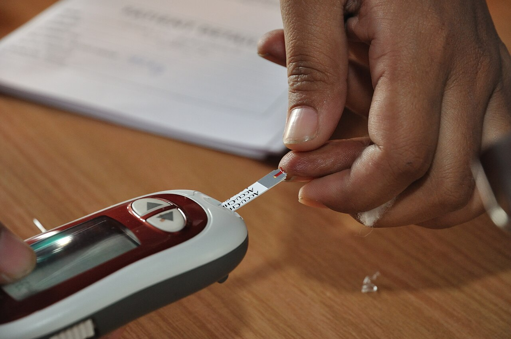

激素调节的过程（上）：血糖平衡的调节
本期导读
激素调节的过程（上）

视频原话 · 导读3 句
- 同学们好！这节课梳理人教版选择性必修一第三章第二节的前半部分——血糖平衡的调节。8.8s
- 这是激素调节最典型的例子，高考常考两种激素的作用、调节过程、曲线分析和糖尿病。8.8s
- 我们按八个考点梳理，每个考点都讲清楚怎么考、怎么做。5.5s
血糖的来源与去路01#
血糖
3.9～6.1 mmol/L
食物中糖类消化吸收（主要）
肝糖原分解
非糖物质转化
氧化分解为CO₂ + H₂O + 能量（主要）
合成肝糖原、肌糖原
转化为甘油三酯等
易错
肌糖原不能直接分解补充血糖；能直接分解补充血糖的只有肝糖原
视频原话4 句
- 考点一，血糖的来源与去路。正常人的血糖浓度在3.9～6.1 mmol/L之间。8.4s
- 血糖有三个来源：食物中的糖类消化吸收，这是主要来源；肝糖原分解；非糖物质转化为葡萄糖。9.6s
- 也有三个去路：氧化分解为二氧化碳和水，释放能量，这是主要去路；合成肝糖原、肌糖原；转化为甘油三酯等非糖物质。11.9s
- 易错：肌糖原不能直接分解成葡萄糖补充血糖，能直接分解补充血糖的只有肝糖原。8.4s
胰岛素与胰高血糖素02#
胰岛素胰岛B细胞↓ 降血糖
促进：血糖进入组织细胞氧化分解、合成糖原、转化为甘油三酯
抑制：肝糖原分解、非糖物质转化为葡萄糖
唯一能降低血糖的激素
胰高血糖素胰岛A细胞↑ 升血糖
促进肝糖原分解、非糖物质转化
肾上腺素肾上腺髓质↑ 升血糖
⇄ 相抗衡
协同
考法
胰岛素 ⇄ 胰高血糖素：相抗衡；胰高血糖素 + 肾上腺素：协同升血糖
视频原话5 句
- 考点二，调节血糖的激素。胰岛素由胰岛B细胞分泌，是唯一能降低血糖的激素。8.1s
- 它一方面促进血糖进入组织细胞氧化分解、合成糖原、转化为甘油三酯；另一方面抑制肝糖原分解和非糖物质转化为葡萄糖。12.2s
- 胰高血糖素由胰岛A细胞分泌，主要作用于肝，促进肝糖原分解和非糖物质转化，使血糖升高。9.2s
- 此外，肾上腺髓质分泌的肾上腺素也能升高血糖。5.3s
- 考法：胰岛素与胰高血糖素作用相抗衡；胰高血糖素与肾上腺素在升血糖上是协同作用。9.0s
血糖调节的过程03#
考法
神经—体液调节，以激素调节为主；神经调节最终通过激素起作用
视频原话5 句
- 考点三，血糖调节的过程。血糖升高时，可以直接刺激胰岛B细胞，分泌胰岛素增加。8.7s
- 血糖降低时，可以直接刺激胰岛A细胞，分泌胰高血糖素增加。6.0s
- 神经系统也参与调节：血糖升高时，{下丘脑|brown}的某个区域兴奋，通过副交感神经使胰岛B细胞分泌胰岛素。10.1s
- 血糖降低时，下丘脑的另一个区域兴奋，通过交感神经使胰岛A细胞分泌胰高血糖素，还使肾上腺髓质分泌肾上腺素。11.3s
- 考法：血糖平衡是神经—体液调节，以激素调节为主；神经调节最终还是通过激素起作用。9.1s
反馈调节04#
系统本身工作的效果，反过来又作为信息调节该系统的工作 → 反馈调节
负反馈：普遍存在，对维持稳态有重要意义
正反馈：排尿反射、分娩、血液凝固
使原来的变化越来越强
使原来的变化越来越强
视频原话4 句
- 考点四，反馈调节。在一个系统中，系统本身工作的效果，反过来又作为信息调节该系统的工作，这种调节方式叫作反馈调节。12.4s
- 比如胰岛素使血糖降低，血糖降低后，又会使胰岛素的分泌减少，这是负反馈。7.8s
- 负反馈调节是生命系统中非常普遍的调节机制，对于机体维持稳态具有重要意义。8.0s
- 易错：反馈调节也有正反馈，比如排尿反射、分娩、血液凝固，它使原来的变化越来越强，而不是维持稳定。10.6s
血糖与激素曲线05#
进食后
运动（或饥饿）时
解题方法
先看血糖变化，再推激素：血糖高 → 胰岛素多；血糖低 → 胰高血糖素多；两条激素曲线一升一降
视频原话4 句
- 考点五，曲线分析。先看进食后：血糖浓度先升高，随后在胰岛素作用下回落。8.4s
- 胰岛素含量随血糖升高而升高，峰值出现得稍晚一点；胰高血糖素含量则下降。7.9s
- 再看运动或饥饿时：血糖被大量消耗，胰高血糖素含量升高，胰岛素含量降低，血糖基本维持稳定。9.9s
- 解题方法：先判断血糖的变化方向，再推激素：血糖高，胰岛素多；血糖低，胰高血糖素多。两条激素曲线往往一升一降。12.6s
1型与2型糖尿病06#
| 1型糖尿病 | 2型糖尿病 | |
|---|---|---|
| 病因 | 胰岛B细胞受损 | 靶细胞对胰岛素不敏感（如受体异常） |
| 胰岛素含量 | 偏低 | 可能正常甚至偏高 |
| 注射胰岛素 | 有效 | 效果往往不佳 |
典型症状：三多一少
多尿
糖随尿排出，带走大量水
多饮
失水多，口渴
多食
细胞能量供应不足
体重减少
脂肪、蛋白质分解增加
考法
解释“三多一少”：从糖不能被利用出发，推出失水、缺能、分解增加
视频原话4 句
- 考点六，糖尿病。1型糖尿病是胰岛B细胞受损，胰岛素分泌不足，可以通过注射胰岛素治疗。9.6s
- 2型糖尿病与遗传、环境、生活方式等有关，常见原因是靶细胞对胰岛素不敏感，比如受体异常，患者的胰岛素含量可能正常甚至偏高，注射胰岛素效果往往不佳。15.7s
- 糖尿病的典型症状是“三多一少”：多饮、多食、多尿，体重减少。6.7s
- 考法：解释“三多一少”：糖随尿排出带走大量水，所以多尿、多饮；细胞能量供应不足，所以多食；脂肪和蛋白质分解增加，所以消瘦。13.4s
尿糖检测与判断07#
- 尿液 + 斐林试剂
- →50～65 ℃
- 水浴加热 →砖红色沉淀 → 含葡萄糖
尿中有糖 ≠ 糖尿病
· 一次吃糖过多（血糖暂时超过肾的重吸收能力）
· 肾小管重吸收功能障碍
· 肾小管重吸收功能障碍
考法
判断糖尿病看血糖浓度是否持续偏高；再结合胰岛素含量判断1型还是2型
视频原话3 句
- 考点七，尿糖检测。可以用斐林试剂检测尿液中的还原糖，水浴加热后出现砖红色沉淀，说明尿中有葡萄糖。也可以用尿糖试纸。13.5s
- 但要注意：尿中有糖不一定是糖尿病。一次吃糖过多，或者肾小管重吸收功能障碍，也会出现尿糖。10.1s
- 考法：判断是否患糖尿病，要看血糖浓度是否持续偏高，并结合胰岛素含量判断是1型还是2型。10.0s
验证胰岛素的实验08#
生理状况相同的小鼠 → 先饥饿处理
实验组
- 注射胰岛素溶液
- →低血糖症状
- →注射葡萄糖溶液
- →症状缓解
对照组
- 注射等量生理盐水
- →活动正常
低血糖症状：活动减少，甚至昏迷
解题方法
两次对照：先注射胰岛素（与生理盐水组对照）证明能降血糖；再注射葡萄糖（自身前后对照）排除其他原因
视频原话5 句
- 考点八，实验设计：验证胰岛素有降低血糖的作用。5.4s
- 取生理状况相同的小鼠，先{饥饿处理|brown}，使实验现象更明显。实验组注射胰岛素溶液，对照组注射等量生理盐水。11.2s
- 一段时间后，实验组小鼠出现低血糖症状，比如活动减少、甚至昏迷；对照组正常。8.5s
- 再给出现症状的小鼠注射葡萄糖溶液，症状很快缓解，这就进一步证明症状是低血糖引起的。8.8s
- 解题方法：这是“先注射胰岛素，后注射葡萄糖”的两次对照：第一次证明胰岛素能降血糖，第二次通过自身前后对照，排除其他原因。12.7s
易错速查✓
先自己判断，再点按钮查看对错与解析。
- 1肌糖原可以直接分解成葡萄糖补充血糖说法错误：只有肝糖原能直接分解补充血糖
- 2胰岛素是唯一能降低血糖的激素说法正确。
- 3胰高血糖素与肾上腺素在升血糖上相抗衡说法错误：二者是协同作用
- 4血糖调节只有激素调节，没有神经调节说法错误：下丘脑可通过自主神经调节胰岛
- 52型糖尿病患者注射胰岛素效果往往不佳说法正确。
- 6尿中有糖，一定是糖尿病说法错误：一次吃糖过多、肾脏病变也可能出现尿糖
一降两升记清楚，血糖题稳稳拿分！
视频原话 · 易错速查5 句
- 最后，用六道判断题检验一下。3.6s
- 肌糖原可以直接分解成葡萄糖补充血糖？错，只有肝糖原可以。胰岛素是唯一能降低血糖的激素？对。11.2s
- 胰高血糖素与肾上腺素在升血糖上相抗衡？错，是协同作用。血糖调节只有激素调节？错，下丘脑可通过自主神经调节胰岛。14.0s
- 2型糖尿病患者注射胰岛素效果往往不佳？对。尿中有糖，一定是糖尿病？错。9.5s
- 八个考点串起来：血糖三来源三去路，一种激素降、两种激素升，神经通过激素起作用，再加上反馈、曲线和糖尿病。掌握这些，这一节就能稳稳拿分！我们下期再见！16.7s
图片来源
图片来源：Wikimedia Commons —— Biswarup Ganguly《Blood Glucose Testing - Kolkata 2011-07-25 3982》CC BY 3.0
Photo: Biswarup Ganguly, CC BY 3.0